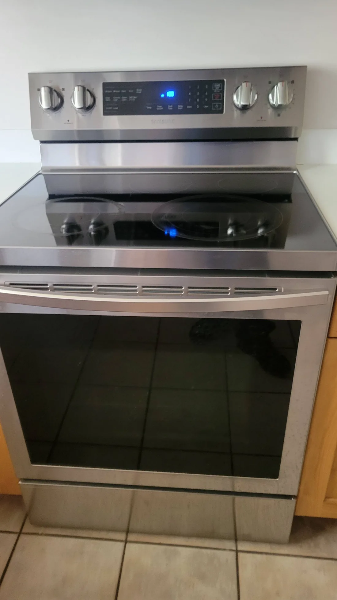

On-site service · Salt Lake, Utah, Davis & Weber counties
Appliance repair in Salt Lake City, and flat panel TVs too.
The Repair Pros fixes refrigerators, washers, dryers, ovens, dishwashers, microwaves, range hoods and TVs at your home. Factory-trained technicians, factory original parts, and most repairs done on the first visit.
- Service call
- $125
- Average job
- $150–400
- Warranty
- 90 days
- Cities
- 61

01 · Diagnose
Tell us what it’s doing. We’ll write it up.
Pick the product and the symptom. You’ll get the work order we’d start with: what the visit costs, what a typical job runs, and what’s covered.
1 What needs fixing?
2 What’s it doing?
- Product
- Refrigerator
- Complaint
- Pick a symptom
- Step 1
- On-site diagnosis: $125 service call. Or a virtual repairman visit and estimate at a fraction of the cost.
- Typical job
- $150–$400 average. Costs vary with the issue and the product.
- Parts
- Factory original
- Warranty
- 90 days, parts and labor, on the work done
02 · What we repair
All types of appliances, and flat panel TVs.
Nine product lines, fixed in your kitchen, laundry room or living room. These are our own jobs.

Not cooling well, not making ice or dispensing water, making noise.

Not working, not draining or spinning, making noise.

Not heating, not cooking well, burners not working.

Not working, not spinning or heating up, making noise.

Dead, no power, distorted or faded picture, lost sound.
Dishwasher not cleaning well, not draining, leaking? We fix those too.
Start a work order03 · Factory authorized
Authorized by the brands we repair.
The highest level of Samsung service provider.
The highest level of Sharp service provider.
The only authorized service center for Philips TV in Utah.
High-end luxury kitchen appliances.
Out of warranty, all major brands: Whirlpool, Maytag, KitchenAid, Amana, Jenn-Air, GE, Hotpoint, GE Profile, Café, Monogram, Haier, Viking and more.
04 · How it works
Four steps, start to done.
- 01Request online
You can quickly and easily request service online for any of the products we repair.
- 02We contact you
We contact you to discuss service call rates for your product and area.
- 03Start repair
Our skilled technicians are ready to tackle your TV or appliance repair.
- 04Your job done
You can trust that your job will be done right the first time, with warranteed work.
05 · Pricing
How much does a repair cost?
Repair costs vary a lot depending on the issue and the product, and there’s no way to price a repair accurately without diagnosing it first. So the first step is a diagnosis: an on-site service call, or a virtual repairman visit and estimate at a fraction of the cost. Contact us for pricing and availability.
Request service06 · Why us
Reasons customers keep calling.
- Screened technicians
Licensed, insured, background and drug screened.
- Factory trained
Expert factory certified and trained technicians.
- We come to you
A large service area across four counties.
- First-visit fixes
Fast repairs, usually fixed on the first visit.
- Original parts
Factory original parts with a 90-day parts and labor warranty on the work done.
“I had a great experience with the repair pros! Their office staff reached out promptly to schedule my service visit, and on the day of install they were very communicative with the arrival window. The service technician Rodney was friendly, personable, and knowledgeable. My issue was resolved, and we’re happy customers!”
“Mark was amazing in getting my TV fixed. He was very polite and explained everything to me that I wanted and needed to know. I highly recommend these guys for all appliance repair”
“Rodney came out and fixed up our frozen Samsung ice maker. He was very patient with it even though the repair took twice as long as he expected it would. He did great work and definitely took care of us.”
“Jason was our technician and he was dispatched for warranty on the touchscreen of my less than one month old Samsung refrigerator. I was incredibly upset about the appliance but the service company called promptly even though I’m in Cache Valley, a long drive from Draper. They ordered the parts they thought were applicable after listening to my thoughts and arrived during their scheduled appt window. Jason was able to make the repair and ensure everything was functioning as it should. Given the circumstances, I had a great experience with this repair company.”
“Wow, I’ve never had such an amazing service man! Mark knew exactly what to do and how to quickly get the job done. Our tv is now ready for the all important weekend game. When we heard of all the other items they repair I kept the card and placed it where it could be found quickly for our next repair need. I will ask for Mark each time.”
“Rodney was very informative, nice and friendly. Also, Tara, (office) helped me greatly! She’s sweet and helpful and I am very grateful for everyone including the parts department for all they have done to help me as well. Thank you repair pros.”
“Very Profesional. I have had them repair appliances twice now and both times went well. Thank you!”
07 · Service area
61 cities, four counties.
If you don’t see your city listed, ask whether we can service your area.
- Salt Lake City
- Murray
- Millcreek
- Cottonwood Heights
- Sandy
- Midvale
- Draper
- West Valley City
- Magna
- Kearns
- Taylorsville
- West Jordan
- South Jordan
- Herriman
- Riverton
- Lehi
- Eagle Mountain
- Saratoga Springs
- Alpine
- Highland
- Pleasant Grove
- Cedar Hills
- American Fork
- Orem
- Provo
- Vineyard
- Lindon
- Springville
- Mapleton
- Spanish Fork
- Salem
- Payson
- Santaquin
- Elk Ridge
- Woodland Hills
- Bountiful
- West Bountiful
- North Salt Lake
- Woods Cross
- Centerville
- Farmington
- Kaysville
- Layton
- Fruit Heights
- Clearfield
- Syracuse
- Sunset
- South Weber
- Clinton
- West Point
- Ogden
- South Ogden
- Roy
- Riverdale
- West Haven
- Plain City
- Harrisville
- Pleasant View
- North Ogden
- Uintah
- Washington Terrace
08 · Book
Request service online.
Send the form and we’ll contact you to go over service call rates for your product and area. Or call (801) 268-6868.
Common questions
01How much does an appliance repair cost?
Repair costs vary a lot with the issue and the product. The average job runs $150–$400. There’s no way to price a repair accurately without diagnosing it first, so we offer an on-site service call for $125 to have a technician come and diagnose the problem, or a virtual repairman visit and estimate at a fraction of that cost.
02What warranty do repairs come with?
We use only factory original parts, with a 90-day parts and labor warranty on the work done.
03Do you fix it on the first visit?
Usually, yes. Our technicians are factory certified and trained, and most repairs are fixed on the first visit.
04Which brands do you repair?
We’re a Samsung branded engineer, a Sharp master service center, the only authorized service center for Philips TV in Utah, and a Dacor authorized service center. We also work on all major brands out of warranty, including Whirlpool, Maytag, KitchenAid, Amana, Jenn-Air, GE, Hotpoint, GE Profile, Café, Monogram, Haier, Viking.
05Where do you work?
On site across Salt Lake, Utah, Davis and Weber counties, from Ogden to Santaquin. If you don’t see your city listed, ask whether we can service your area.
Book a Repair
Something broken? Book the repair.
Call (801) 268-6868 or request service online. We’ll call you back to go over service call rates for your product and area.
Book a Repair